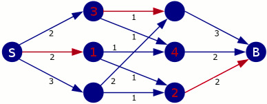

La solution
La réponse est 7 troncs par minute. L'image ci-dessous montre
combien de troncs faire passer sur chaque canal pour atteindre ce résultat.
Les traits en rouge indiquent les canaux qui ne sont pas utilisés à
leur pleine capacité.

Comment savoir que l'on ne peut pas faire mieux ? Étudions
la situation aux points de passage que l'on a numérotés en rouge.
- Au point de passage numéro 1, seuls deux troncs peuvent repartir,
donc le canal qui arrive à ce point de passage sera forcément
sous-exploité (2 troncs au lieu de 3 possibles).
- Au point de passage numéro 2, seuls deux troncs peuvent arriver,
donc le canal qui repart sera forcément sous-exploité
(2 troncs au lieu de 3 possibles).
- Au point de passage numéro 3, seul deux troncs peuvent arriver,
donc un des canaux qui repartent doit être sous-exploité. Il n'y a aucun
intérêt à priver le canal qui rejoint le point de passage numéro 4 de son
tronc, donc on choisit d'enlever un tronc à l'autre canal.
- Pour les autres points de passages, qui ne sont pas numérotés,
on utilise le maximum du débit possible.
C'est de l'informatique
Ce sujet illustre un problème appelé problème du flot maximum.
Il s'agit d'un problème classique en informatique.
Ce problème a de très nombreuses applications dans la vie courante, par exemple pour optimiser
le transport aérien, le transport d'électricité, le transfert des données Internet, etc...
Il existe des algorithmes relativement efficaces permettant de
trouver le flot maximum.